폐기물처리기사 (2019-09-21 기출문제)
1과목: 폐기물 개론
1. 종이, 천, 돌, 철, 나무조각, 구리, 알루미늄이 혼합된 폐기물 중에서 재활용 가치가 높은 구리, 알루미늄만을 따로 분리, 회수하는 데 가장 적절한 기계적 선별법은?
- 자력선별법
- 트롬멜선별법
- 와전류선별법
- 정전기선별법
(정답률: 87%)

2. 폐기물의 관리정책에서 중점을 두어야 할 우선순위로 가장 적당한 것은?
- 감량화(발생원)＞처리(소각 등)＞재활용＞최종처분
- 감량화(발생원)＞재활용＞처리(소각 등)＞최종처분
- 처리(소각 등)＞감량화(발생원)＞재활용＞최종처분
- 재활용＞처리(소각 등)＞감량화(발생원)＞최종처분
(정답률: 90%)
3. 폐기물에 관한 설명으로 맞는 것은?
- 음식폐기물을 분리수거하면 유기물 감소로 인해 생활폐기물의 발열량은 감소한다.
- 일반적으로 생활폐기물의 화학성분 중에 제일 많은 것 2개는 산소(O)와 수소(H)이다.
- 소각로 설계 시 기준 발열량은 고위발열량이다.
- 폐기물의 비중은 일반적으로 겉보기 비중을 말한다.
(정답률: 72%)
4. 폐기물저장시설과 컨베이어 설계 시 고려할 사항으로 가장 거리가 먼 것은?
- 수분함량
- 안식각
- 입자크기
- 화학조성
(정답률: 68%)
5. X90=3.0cm로 도시폐기물을 파쇄하고자 한다. 90% 이상을 3.0cm보다 작게 파쇄하고자 할 때 Rosin-Rammler 모델에 의한 특성입자크기(cm)는? (단, n=1)
- 1.30
- 1.42
- 1.74
- 1.92
(정답률: 64%)
6. 폐기물의 소각 시 소각로의 설계기준이 되는 발열량은?
- 고위 발열량
- 전수 발열량
- 저위 발열량
- 부분 발열량
(정답률: 84%)
7. 도시쓰레기의 특성에 대한 설명으로 옳지 않은 것은?
- 배출량은 생활수준의 향상, 생활양식, 수집형태 등에 따라 좌우된다.
- 도시쓰레기의 처리에 있어서 그 성상은 크게 문제시 되지 않는다.
- 쓰레기의 질은 지역, 계절, 기후 등에 따라 달라진다.
- 계절적으로 연말이나 여름철에 많은 양의 쓰레기가 배출된다.
(정답률: 87%)
8. 폐기물의 기계적처리 중 폐기물을 물과 섞어 잘게 부순 뒤 물과 분리하는 장치는?
- Grinder
- Hammer Mil
- Balers
- Pulverizer
(정답률: 76%)
9. 납과 구리의 합금 제조 시 첨가제로 사용되며 발암성과 돌연변이성이 있으며 장기적인 노출시 피로와 무기력증을 유발하는 성분은?
- As
- Pb
- 벤젠
- 린덴
(정답률: 82%)
10. 폐기물의 수거노선 설정 시 고려해야 할 내용으로 옳지 않은 것은?
- 언덕지역에서는 언덕의 꼭대기에서부터 시작하여 적재하면서 차량이 아래로 진행하도록 한다.
- U자 회전을 피하여 수거한다.
- 아주 많은 양의 쓰레기가 발생되는 발생원은 하루 중 가장 나중에 수거한다.
- 가능한 한 시계방향으로 수거노선을 정한다.
(정답률: 87%)
11. 1000세대(세대 당 평균 가족 수 5인) 아파트에서 배출하는 쓰레기를 3일마다 수거하는 데 적재용량 11.0m3의 트럭 5대(1회 기준)가 소요된다. 쓰레기 단위 용적당 중량이 210kg/m3이라면 1인 1일당 쓰레기 배출량(kg/인ㆍ일)은?
- 2.31
- 1.38
- 1.12
- 0.77
(정답률: 63%)
12. 50ton/hr 규모의 시설에서 평균크기가 30.5cm인 혼합된 도시폐기물을 최종크기 5.1cm로 파쇄하기 위해 필요한 동력(kW)은? (단, 평균크기를 15.2cm에서 5.1cm로 파쇄하기 위한 에너지 소모율=15kWㆍh/t, 킥의 법칙 적용)
- 약 1033
- 약 1156
- 약 1228
- 약 1345
(정답률: 64%)
13. 완전히 건조시킨 폐기물 20g을 취해 회분량을 조사하니 5g이었다. 폐기물의 함수율이 40%이었다면, 습량기준 회분 중량비(%)는? (단, 비중=1.0)
- 5
- 10
- 15
- 20
(정답률: 64%)
14. 적환장의 설치가 필요한 경우와 가장 거리가 먼 것은?
- 고밀도 거주지역이 존재할 때
- 작은 용량의 수집차량을 사용할 때
- 슬러지수송이나 공기수송 방식을 사용할 때
- 불법투기와 다량의 어질러진 쓰레기들이 발생할 때
(정답률: 79%)
15. 함수율 97%인 분뇨와 함수율 30%인 쓰레기를 무게비 1 : 3으로 혼합하여 퇴비화하고자 할 때 함수율(%)은? (단, 분뇨와 쓰레기의 비중은 같다고 가정함)
- 약 62
- 약 57
- 약 52
- 약 47
(정답률: 71%)
16. 쓰레기 발생량 조사방법에 관한 설명으로 틀린 것은?
- 직접계근법 : 적재차량 계수분석에 비하여 작업량이 많고 번거롭다는 단점이 있다.
- 물질수지법 : 주로 산업폐기물 발생량 추산에 이용한다.
- 물질수지법 : 비용이 많이 들어 특수한 경우에 사용한다.
- 적채차량 계수분석 : 쓰레기의 밀도 또는 압축정도를 정확하게 파악할 수 있다.
(정답률: 76%)
17. 유기물을 혐기성 및 호기성으로 분해시킬 때 공통적으로 생성되는 물질은?
- N2와 H2O
- NH3와 CH4
- CH4와 H2S
- CO2와 H2O
(정답률: 77%)
18. 관거 수거에 대한 설명으로 옳지 않은 것은?
- 현탁물 수송은 관의 마모가 크고 동력수모가 많은 것이 단점이다.
- 캡슐수송은 쓰레기를 충전한 캡슐을 수송관내에 삽입하여 공기나 물의 흐름을 이용하여 수송하는 방식이다.
- 공기수송은 공기의 동압에 의해 쓰레기를 수송하는 것으로서 진공수송과 가압수송이 있다.
- 공기수송은 고층주택밀집지역에 적합하며 소음방지시설 설치가 필요하다.
(정답률: 69%)
19. 파쇄에 따른 문제점은 크게 공해발생상의 문제와 안전상의 문제로 나눌 수 있는데 안전상의 문제에 해당하는 것은?
- 폭발
- 진동
- 소음
- 분진
(정답률: 82%)
20. 청소상태를 평가하는 방법 중 서비스를 받는 사람들의 만족도를 설문조사하여 계산하는 ‘사용자 만족도 지수’는?
- USI
- UAI
- CEI
- CDI
(정답률: 79%)
2과목: 폐기물 처리 기술
21. 소각공정에 비해 열분해 과정의 장점이라 볼 수 없는 것은?
- 배기가스가 적다.
- 보존연료의 소비량이 적다.
- 크롬의 산화가 억제된다.
- NOx 의 발생량이 억제된다.
(정답률: 66%)
22. 아래와 같은 조건일 때 혐기성 소화조의 용량(m3)은? (단, 유기물량의 50%가 액화 및 가스화된다고 한다. 방식은 2조식이다.)
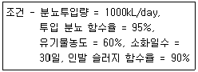
- 12350
- 17850
- 20250
- 25500
(정답률: 51%)
23. 소각로의 백연(white plum) 방지시설의 역할로 가장 옳게 설명된 것은?
- 배출가스 중 수증기 응축을 방지하여 지역주민의 대기오염 피해의식을 줄이기 위해
- 먼지 제거
- 폐열 회수
- 질소산화물 제거
(정답률: 76%)
24. 토양 복원기술 중 압력 및 농도구배를 형성하기 위하여 추출정을 굴착하여 진공상태로 만들어 줌으로써 토양 내의 휘발성 오염물질을 휘발, 추출하는 기술은?
- Biopile
- Bioaugmentation
- Soil vapor extraction
- Thermal Decomposition
(정답률: 81%)
25. 소각로의 부식에 대한 설명으로 틀린 것은?
- 480~700℃사이에서는 염화철이나 알칼리철 황산염 분해에 의한 부식이 발생된다.
- 저온부식은 100~150℃사이에서 부식속도가 가장 느리고, 고온부식은 600~700℃에서 가장 부식이 잘된다.
- 150~320℃에서는 부식이 잘 일어나지 않고, 고온 부식은 320℃이상에서 소각재가 침착된 금속면에서 발생된다.
- 320~480℃사이에서는 염화철이나 알칼리철 황삼염 생성에 의한 부식이 발생된다.
(정답률: 66%)
26. 함수율이 96%인 슬러지 10L에 응집제를 가하여 침전 농축시킨 결과 상층액과 침전슬러지의 용적비가 2 : 1이었다면 침전 슬러지의 함수율(%)은? (단, 비중=1.0 기준, 상층액 SS, 응집제량 등 기타사항은 고려하지 않음)
- 84
- 88
- 92
- 94
(정답률: 55%)
27. 피부염, 비부궤양을 일으키며 흡입으로 코, 폐, 위장에 점막을 생성하고 폐암을 유발하는 중금속은?
- 비소
- 납
- 6가 크롬
- 구리
(정답률: 66%)
28. 폐기물부담금제도에 해당되지 않는 품목은?
- 500mL 이하의 살충제 용기
- 자동차 타이어
- 껌
- 1회용 기저귀
(정답률: 75%)
29. 매립지 가스발생량의 추정 방법으로 가장 거리가 먼 것은?
- 화학양론적인 접근에 의한 폐기물 조성으로부터 추정
- BMP(Biological Methane Potential)법에 의한 메탄가스 발생량 조사법
- 라이지미터(Lysimeter)에 의한 가스발생량 추정법
- 매립지에 화염을 접근시켜 화력에 의해 추정하는 방법
(정답률: 77%)
30. 퇴비화의 장ㆍ단점과 가장 거리가 먼 것은?
- 병원균 사멸이 가능한 장점이 있다.
- 다양한 재료를 이용하므로 퇴비제품의 품질표준화가 어려운 담점이 있다.
- 퇴비화가 완성되어도 부피가 크게 감소(50% 이하)하지 않는 단점이 있다.
- 생산된 퇴비는 비료가치가 높은 장점이 있다.
(정답률: 78%)
31. 침출수가 점토층을 통과하는데 소요되는 시간을 계산하는 식으로 옳은 것은? (단, t=통과시간(year), d=점토층두께(m), h=침출수 수두(m), K=투수계수(m/year), n=유효공극률)
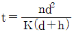
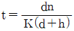
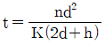
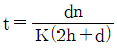
(정답률: 77%)
32. 수분함량 95%(무게%)의 슬러지에 응집제를 소량 가해 농축시킨 결과 상등액과 침전 슬러지의 용적비가 3 : 5이었다. 이 침전 슬러지의 함수율(%)은? (단, 응집제의 주입량은 소량이므로 무시, 농축전후 슬러지 비중=1)
- 94
- 92
- 90
- 88
(정답률: 62%)
33. 매립지에서 침출된 침출수의 농도가 반으로 감소하는 데 약 3.3년의 걸린다면 이 침출수의 농도가 90% 분해되는 데 걸리는 시간(년)은? (단, 1차 반응 기준)
- 약 7
- 약 9
- 약 11
- 약 13
(정답률: 68%)
34. 폐기물의 퇴비화에 관한 설명으로 옳지 않은 것은?
- C/N비가 클수록 퇴비화에 시간이 많이 요하게 된다.
- 함수율이 높을수록 미생물의 분해속도는 빠르다.
- 공기가 과잉공급되면 열손실이 생겨 미생물의 대사열을 빼앗겨서 동화작용이 저해된다.
- 공기공급이 부족하면 혐기성분해에 의해 퇴비화 속도의 저하를 초래하고 악취발생의 원인이 된다.
(정답률: 63%)
35. 함수율이 95%이고, 고형물 중 유기물이 70%인 하수슬러지 300m3/day를 소화시켜 유기물의 2/3가 분해되고 함수율 90%인 소화슬러지를 얻었다. 소화슬러지 양(m3/day)은? (단, 슬러지 비중=1.0)
- 80
- 90
- 100
- 110
(정답률: 51%)
36. 매립지 바닥이 두껍고(지하수면이 지표면으로부터 깊은 곳에 있는 경우), 복토로 적합한 지역에 이용하는 방법으로 거의 단층매립만 가능한 공법은?
- 도랑굴착매립공법
- 압축매립공법
- 샌드위치공법
- 순차투입공법
(정답률: 73%)
37. 폐기물 매립지에서 매립시간 경과에 따라 크게 초기조절단계, 전이단계, 산형성 단계, 메탄발효단계, 숙성단계의 총 5단계로 구분이 되는데, 4단계인 메탄발효단계에서 나타나는 현상과 가장 근접한 것은?
- 수소농도가 증가함
- 산 형성 속도가 상대적으로 증가함
- 침출수의 전도도가 증가함
- pH가 중성값보다 약간 증가함
(정답률: 76%)
38. 토양세척법의 처리효과가 가장 높은 토양입경정도는?
- 슬러지
- 점토
- 미사
- 자갈
(정답률: 77%)
39. 폐기물 매립지에서 나오는 침출수에 관한 설명으로 가장 거리가 먼 것은?
- 폐기물을 통과하면서 폐기물 내의 성분을 용해시키거나 부유 물질을 함유하기도 한다.
- 가스 발생량이 많을수록 침출수 내 유기물질농도는 증가한다.
- 외부에서 침투하는 물과 내부에 있는 물이 유출되어 형성한다.
- 매립지의 침출수의 이동은 서서히 이동된다고 한다.
(정답률: 73%)
40. 폐기물 매립 시 매립된 물질의 분해과정은?
- 혐기성→호기성→메탄생성→산성물질형성
- 호기성→혐기성→산성물질형성→메탄생성
- 호기성→혐기성→메탄생성→산성물질형성
- 혐기성→호기성→산성물질형성→메탄생성
(정답률: 70%)
3과목: 폐기물 소각 및 열회수
41. 폐기물의 이송과 연소가스의 유동방향에 의해 소각로의 형상을 구분해 볼 때 난연성 또는 착화하기 어려운 폐기물에 적합한 방식은?
- 병류식
- 하향식
- 향류식
- 중간류식
(정답률: 60%)
42. 폐기물의 열분해 시 저온열분해의 온도 범위는?
- 100~300℃
- 500~900℃
- 1100~1500℃
- 1300~1900℃
(정답률: 66%)
43. 폐기물조성이 C760H1980O870N12S일 때 고위발열량(kcaal/kg)은? (단, Dulong 식을 이용하여 계산한다.)
- 약 5860
- 약 4560
- 약 3260
- 약 2860
(정답률: 45%)
44. 고체 및 액체연료의 이론적인 습윤연소가스량을 산출하는 계산식이다. ㉠, ㉡의 값으로 적당한 것은?
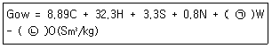
- ㉠ 1.12, ㉡ 1.32
- ㉠ 1.24, ㉡ 2.64
- ㉠ 2.48, ㉡ 5.28
- ㉠ 4.96, ㉡ 10.56
(정답률: 68%)
45. 폐기물의 연소 및 열분해에 관한 설명으로 잘못된 것은?
- 열분해는 무산소 또는 저산소 상태에서 유기성 폐기물을 열분해 시키는 방법이다.
- 습식산화는 젖은 폐기물이나 슬러지를 고온, 고압하에서 산화시키는 방법이다.
- Steam Reforming은 산화 시에 스팀을 주입하여 일산화탄소와 수소를 생성시키는 방법이다.
- 가스화는 완전연소에 필요한 양보다 과잉 공기 상태에서 산화시키는 방법이다.
(정답률: 63%)
46. 연소를 위한 공기의 상태로 가장 좋은 것은?
- 연소용 공기를 직접 이용한다.
- 연소용 공기를 예열한다.
- 연소용 공기를 냉각시켜 온도를 낮춘다.
- 연소용 공기에 벙커의 폐수를 분사하여 습하게 하여 주입시킨다.
(정답률: 71%)
47. 소각로에서 배출되는 비산재(fly ash)에 대한 설명으로 옳지 않은 것은?
- 입자크기가 바닥재보다 미세하다.
- 유해물질을 함유하고 있지 않아 일반폐기물로 취급된다.
- 폐열보일러 및 연소가스 처리설비 등에서 포집된다.
- 시멘트 재품 생산을 위한 보조원료로 사용가능하다.
(정답률: 74%)
48. 도시생활폐기물을 대상으로 하는 소각방법에 많이 이용되는 형식이 아닌 것은?
- Stoker type incinerator
- Multiple hearth incinerator
- Rotary kiln incinerator
- Fluidized bed incinerator
(정답률: 63%)
49. 연소실 내 가스와 폐기물의 흐름에 관한 설명으로 가장 거리가 먼 것은?
- 병류식은 폐기물의 발열량이 낮은 경우에 적합한 형식이다.
- 교류식은 항류식과 병류식의 중간적인 형식이다.
- 교류식은 중간 정도의 발열량을 가지는 폐기물에 적합하다.
- 역류식은 폐기물의 이송방향과 연소가스의 흐름이 반대로 향하는 형식이다.
(정답률: 63%)
50. 폐기물의 소각시설에서 발생하는 분진의 특징에 대한 설명으로 가장 거리가 먼 것은?
- 흡수성이 작고 냉각되면 고착하기 어렵다.
- 부피에 비해 비중이 작고 가볍다.
- 입자가 큰 분진은 가스 냉각장치 등의 비교적 가스 통과속도가 느린 부분에서 침강하기 때문에 분진의 평균입경이 작다.
- 염화수소나 황산화물로 인한 설비의 부식을 방지하기 위해 일반적으로 가스냉각장치 출구에서 250℃정도의 온도가 되어야 한다.
(정답률: 66%)
51. 연소실의 부피를 결정하려고 한다. 연소실의 부하율은 3.6×105kcal/m3ㆍhr이고 발열량이 1600kcal/kg인 쓰레기를 1일 400ton 소각시킬 때 소각로의 연소실 부피는? (단, 소각로는 연속가능 한다.)
- 74
- 84
- 104
- 974
(정답률: 60%)
52. 원소분석으로부터 미지의 쓰레기 발열량은 듀롱(Dulong)식으로부터 계산될 수 있다. 계산식에서
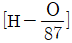
가 의미하는 것은?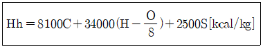
- 유효수소
- 무효수소
- 이론수소
- 과잉수소
(정답률: 75%)
53. 원심력식 집진장치의 장점이 아닌 것은?
- 조작이 간단하고 유지관리가 용이하다.
- 건식 포집 및 제진이 가능하다.
- 고온가스의 처리가 가능하다.
- 분진량과 유량의 변화에 민감하다.
(정답률: 55%)
54. 다음 중 불연성분에 해당하는 것은?
- H(수소)
- O(산소)
- N(질소)
- S(황)
(정답률: 66%)
55. 페플라스틱 소각에 대한 설명으로 틀린 것은?
- 열가소성 폐플라스틱은 열분해 휘발분이 매우 많고 고정탄소는 적다.
- 열가소설 폐플라스틱은 분해 연소를 원칙으로 한다.
- 열경화성 폐플라스틱은 일반적으로 연소성이 우수하고 점화가 용이하여 수열에 의한 팽윤 균열이 적다.
- 열경화성 폐플라스틱의 로 형식은 전처리 파쇄 후 유동층 방식에 의한 것이다.
(정답률: 61%)
56. 연소속도에 영향을 미치는 요인으로 가장 거리가 먼 것은?
- 산소의 농도
- 촉매
- 반응계의 온도
- 연료의 발열량
(정답률: 57%)
57. 유동층 소각로에서 슬러지의 온도가 30℃, 연소온도 850℃, 배기온도 450℃일 때, 유동층 소각로의 열효율(%)은?
- 49
- 51
- 62
- 77
(정답률: 54%)
58. SO2 100kg의 표준상태에서 부피(m3)는? (단. SO2는 이상기체, 표준상태로 가정한다.
- 63.3
- 59.5
- 44.3
- 35.0
(정답률: 55%)
59. 기체연료에 관한 내용으로 옳지 않은 것은?
- 적은 과잉공기(10~20%)로 완전연소가 가능하다.
- 유황 함유량이 적어 SO2 발생량이 적다.
- 저질연료로 고온 얻기와 연료의 예열이 어렵다.
- 취급 시 위험성이 크다.
(정답률: 72%)
60. 소각로의 완전연소 조건에 고려되어야 할 사항으로 가장 거리가 먼 것은?
- 소각로 출구온도 850℃ 이상 유지
- 연소 시 CO 농도 30ppm 이하 유지
- O2 농도 6~12% 유지(화격자식)
- 강열감량(미연분) 5% 이상 유지
(정답률: 56%)
4과목: 폐기물 공정시험기준(방법)
61. 시안을 자외선/가시선 분광법으로 측정할 때 발색된 색은?
- 적자색
- 황갈색
- 적색
- 청색
(정답률: 60%)
62. Lambert Beer 법칙에 관한 설명으로 틀린 것은? (단, A : 흡광도, ε : 흡광계수, c : 농도, ℓ : 빛의 투과거리)
- 흡광도는 광이 통과하는 용액층의 두께에 비례한다.
- 흡광도는 광이 통과하는 용액층의 농도에 비례한다.
- 흡광도는 용액층의 투과도에 비례한다.
- 램버트비어의 법칙을 식으로 표현하면 A=ε×c×ℓ
(정답률: 67%)
63. 대상폐기물의 양이 450톤인 경우, 현장 시료의 최소 수는?
- 14
- 20
- 30
- 36
(정답률: 60%)
64. 액상폐기물 중 PCBs를 기체크로마토그래피로 분석시 사용되는 시약이 아닌 것은?
- 수산화칼슘
- 무수황산나트륨
- 실리카겔
- 노말헥산
(정답률: 53%)
65. 다음 pH 표준액 중 pH 값이 가장 높은 것은?
- 붕산염 표준액
- 인산염 표준액
- 프탈산염 표준액
- 수산염 표준액
(정답률: 57%)
66. 0.1 N HCI 표준용액 50mL를 반응시키기 위해 0.1M Ca(OH)2를 사용하였다. 이 때 사용된 Ca(OH)2 의 소비량(mL)은? (단, HCI와 Ca(OH)2의 역가는 각각 0.995와 1.0⑤이다.)
- 24.75
- 25.00
- 49.50
- 50.00
(정답률: 36%)
67. 기체크로마토그래프를 이용하면 물질의 정량 및 정성분석이 가능하다. 이 중 정량 및 정성 분석을 가능하게 하는 측정치는?
- 정량-유지시간, 정성-피이크의 높이
- 정량-유지시간, 정성-피이크의 폭
- 정량-피이크의 높이, 정성-유지시간
- 정량-피이크의 폭, 정성-유지시간
(정답률: 61%)
68. 중금속시료(염화암모늄, 염화마그네슴, 염화칼슘 들이 다량 함유된 경우)의 전처리 시, 외와에 의한 유기물의 분배과정 중에 휘산되어 손실을 가져오는 중금속으로 거리가 먼 것은?
- 크롬
- 납
- 철
- 아연
(정답률: 54%)
69. 폐기물로부터 유류 추출 시 에멀젼을 형성하여 액층이 분리되지 않을 경우, 조작법으로 옳은 것은?
- 염화제이철 용액 4mL를 넣고 pH를 7~9호 하여 자석교반기로 교반한다.
- 메틸오렌지를 넣고 황색이 적색이 될 때까지 (1+1)염산을 넣는다.
- 노말헥산층에 무수황산나트륨을 넣어 수분간 방치한다.
- 에멀젼층 또는 헥산층에 적당량의 황산암모늄을 넣고 환류냉각관을 부착한 후 80℃ 물중탕에서 가열한다.
(정답률: 56%)
70. 시료의 전처리 방법 중 유기물 등을 많이 함유하고 있는 대부분의 시료에 적용되는 방법은?
- 질산 분해법
- 질산-염산 분해법
- 질산-황산 분해법
- 질산-과염소산 분해법
(정답률: 65%)
71. 원자흡수분광광도계의 구성 순서로 가장 알맞은 것은?
- 시료원자화부-광원부-단색화부-측광부
- 시료원자화부-광원부-측광부-단색화부
- 광원부-시료원자화부-단색화부-측광부
- 광원부-시료원자화부-측광부-단색화부
(정답률: 55%)
72. 자외선/가시선 분광법을 적용한 시안화합물 측정에 관한 내용으로 틀린 것은?
- 시안화합물을 측정할 때 방해물질들은 증류하면 대부분 제거된다.
- 황화합물이 함유된 시료는 아세트산용액을 넣어 제거한다.
- 잔류염소가 함유된 시료는 L-아스코빈산 용액을 넣어 제거한다.
- 잔류염소가 함유된 시료는 이산화비소산나트륨 용액을 넣어 제거한다.
(정답률: 52%)
73. 폐기물공정시험기준상의 규정이다. A+B+C+D의 합을 구한 것은? (문제 오류로 가답안 발표시 2번으로 발표되었지만 확정답안 발표시 모두 정답처리 되었습니다. 여기서는 가답안인 2번을 누르면 정답 처리 됩니다.)
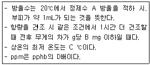
- 31.3
- 45.3
- 58.3
- 68.3
(정답률: 61%)
74. 시안의 분석에 사용되는 방법으로 적당한 것은?
- 피리딘ㆍ피라졸론법
- 디페닐카르바지드법
- 디에틸디티오카르바민산법
- 디티존법
(정답률: 59%)
75. 일정량의 유기물을 질산-과염소산법으로 전처리하여 최종적으로 50mL로 하였다. 용액의 납을 분석한 결과 농도가 2.0mg/L이었다면, 유기물의 원래의 농도(mg/L)는?
- 0.1
- 1.0
- 2.0
- 4.0
(정답률: 34%)
76. 원자흡수분광광도법으로 구리를 측정할 때 정밀도(RDS)는? (단, 정량한계는 0.008mg/L)
- ± 10% 이내
- ± 15% 이내
- ± 20% 이내
- ± 25% 이내
(정답률: 65%)
77. 다음 설명 중 틀린 것은?
- 공정시험기준에서 사용하는 모든 기구 및 기기는 측정결과에 대한 오차가 허용되는 범위 이내인 것을 사용하여야 한다.
- 연속측정 또는 현장측정의 목적으로 사용하는 측정기기는 공정시험기준에 의한 측정치와의 정확한 보정을 행한 후 사용할 수 있다.
- 각각의 시험은 따로 규정이 없는 한 실온에서 실시하고 조작 직후에 그 결과를 관찰한다. 단, 온도의 영향이 있는 것의 판정은 상온을 기준으로 한다.
- 비함침성 고상폐기물이라 함은 금속판, 구리선 등 기름을 흡수하지 않는 평면 또는 비평면형태의 변압기 내부부재를 말한다.
(정답률: 68%)
78. 기체크로마토그래피법에 대한 설명으로 틀린 것은?
- 일반적으로 유기화합물에 대한 정성 및 정량분석에 이용한다.
- 일정유량으로 유지되는 운반가스는 시료도입부로부터 분리관내를 흘러서 검출기를 통하여 외부로 방출된다.
- 정성분석은 동일조건하에서 특정한 미지성분의 머무른값과 예측되는 물질의 피이크의 머무른값을 비교하여야 한다.
- 분리관은 충전물질을 채운 내경 2~7mm의 시료에 대하여 활성금속, 유리 또는 합성수지관으로 각 분석방법에 사용한다.
(정답률: 52%)
79. 자외선/가시선 분광광도계의 흡수셀 중에서 자외부의 파장범위를 측정할 때 사용하는 것은? :
- 유리
- 석영
- 플라스틱
- 광전판
(정답률: 72%)
80. 시료 채취 시 시료용기에 기재하는 사항으로 가장 거리가 먼 것은?
- 폐기물의 명칭
- 폐기물의 성분
- 채취 책임자 이름
- 채취 시간 및 일기
(정답률: 63%)
5과목: 폐기물 관계 법규
81. 폐기물의 수집ㆍ운반, 재활용 또는 처분을 업으로 하려는 경우와 ‘환경부령으로 정하는 중요 사항’을 변경하려는 때에도 폐기물처리사업계획서를 제출해야 한다. 폐기물 수집ㆍ운반업의 경우 ‘환경부령으로 정하는 중요 사항’의 변경 항목에 해당하지 않는 것은?
- 영업구역(생활폐기물의 수집ㆍ운반업만 해당한다.)
- 수집ㆍ운반 폐기물의 종류
- 운반차량의 수 또는 종류
- 폐기물 처분시설 설치 예정지
(정답률: 50%)
82. 폐기물 처리시설의 종류 중 재활용시설에 해당하지 않는 것은?
- 용해로(폐기물에서 비철금속을 추출하는 경우로 한정한다.)
- 소성(시멘트 소성로는 제외한다.)ㆍ탄화 시설
- 공재세척시설(동력 7.5kW 이상인 시설로 한정한다.
- 의약품 제조시설
(정답률: 41%)
83. 환경부령으로 정하는 폐기물처리시설의 설치를 마친 자는 환경부령으로 정하는 검사기관으로부터 검사를 받아야 한다. 이 검사 중 소각시설의 검사기관과 가장 거리가 먼 것은?
- 한국환경공단
- 한국건설기술연구원
- 한국기계연구원
- 한국산업기술시험원
(정답률: 53%)
84. 설치신고대상 폐기물처리시설 기준으로 ()에 옳은 것은?
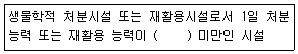
- 5톤
- 10톤
- 50톤
- 100톤
(정답률: 51%)
85. 폐기물처리시설 중 화학적 처분시설에 해당되지 않는 것은?
- 연료화시설
- 고형화시설
- 응집ㆍ침전시설
- 안정화시설
(정답률: 49%)
86. 환경상태의 조사ㆍ평가에서 국가 및 지방자치단체가 상시 조사ㆍ평가하여야 하는 내용으로 틀린 것은?
- 환경의 질의 변화
- 환경오염원 및 환경훼손 요인
- 환경오염지역의 원상회복실태
- 자연환경 및 생활환경 현황
(정답률: 54%)
87. 환경부령으로 정하는 재활용시설과 가장 거리가 먼 것은?
- 재활용가능자원의 수집ㆍ운반ㆍ보관을 위하여 특별히 제조 또는 설치되어 사용되는 수집ㆍ운반 장비 또는 보관시설
- 재활용제품의 제조에 필요한 전처리 장치ㆍ장비ㆍ설비
- 유기성 폐기물을 이용하여 퇴비ㆍ사료를 제조하는 퇴비화ㆍ사료화 시설 및 에너지화 시설
- 생활폐기물 중 혼합폐기물의 소각시설
(정답률: 55%)
88. 환경부령으로 정하는 가연성고형폐기물로부터 에너지를 회수하는 활동기준으로 틀린 것은?
- 다른 물질과 혼합하고 해당 폐기물의 고위발열량이 킬로그램당 3천 킬로칼로리 이상일 것
- 에너지 회수효율(회수에너지 총량을 투입 에너지 총량으로 나눈 비율을 말한다.)이 75% 이상일 것
- 회수열을 모두 열원, 전기 등의 형태로 스스로 이용하거나 다른 사람에게 공급할 것
- 환경부장관이 정하여 고시하는 경우에는 폐기물의 30% 이상을 원료나 재료로 재활용하고 그 나머지 중에서 에너지의 회수에 이용할 것
(정답률: 51%)
89. 시ㆍ도지사나 지방환경관서의 장이 폐기물처리시설의 개선명령을 명할 때 개선 등에 필요한 조치의 내용, 시설의 종류 등을 고려하여 정하여야 하는 기간은? (단, 연장기간은 고려하지 않음)
- 3개월
- 6개월
- 1년
- 1년 6개월
(정답률: 38%)
90. 폐기물 운반자는 배출자로부터 폐기물을 인수받은 날로부터 며칠 이내에 전자정보처리프로그램에 입력하여야 하는가?
- 1일
- 2일
- 3일
- 5일
(정답률: 51%)
91. 폐기물처리시설의 유지ㆍ관리에 관한 기술관리를 대행할 수 있는 자는?
- 한국환경공단
- 국립환경연구원
- 시ㆍ도 보건환경연구원
- 지방환경관리청
(정답률: 66%)
92. 생활폐기물처리에 관한 설명으로 틀린 것은?
- 시장ㆍ군수ㆍ구청장은 관할구역에서 배출되는 생활폐기물을 처리하여야 한다.
- 시장ㆍ군수ㆍ구청장은 해당 지방자치단체의 조례로 정하는 바에 따라 대통령령으로 정하는 자에게 생활폐기물 수집, 운반, 처리를 대행하게 할 수 있다.
- 환경부장관은 지역별 수수료 차등을 방지하기 위하여 지방자치단체에 수수료 기준을 권고할 수 있다.
- 시장ㆍ군수ㆍ구청장은 생활폐기물을 처리할 때에는 배출되는 생활폐기물의 종류, 양 등에 따라 수수료를 징수할 수 있다.
(정답률: 52%)
93. 폐기물처리업의 업종 구분과 영업 내용의 범위를 벗어나는 영업을 한 자에 대한 벌칙 기준은?
- 1년 이하의 징역이나 5백만원 이하의 벌금
- 1년 이하의 징역이나 1천만원 이하의 벌금
- 2년 이하의 징역이나 2천만원 이하의 벌금
- 3년 이하의 징역이나 3천만원 이하의 벌금
(정답률: 55%)
94. 폐기물매립시설의 사후관리 업무를 대행할 수 있는 자는? (단, 그 밖에 환경부장관이 사후관리를 대행할 능력이 있다고 인정하여 고시하는 자의 경우 제외)
- 유역ㆍ지방 환경청
- 국립환경과학원
- 한국환경공단
- 시ㆍ도 보건환경연구원
(정답률: 66%)
95. 폐기물관리법에서 사용되는 용어의 정의로 틀린 것은?
- 의료폐기물 : 보건ㆍ의료기관, 동물병원, 시험ㆍ검사기관 등에서 배출되어 인간에게 심각한 위해를 초래하는 폐기물로 환경부령으로 정하는 폐기물을 말한다.
- 생활폐기물 : 사업장폐기물 외의 폐기물을 말한다.
- 지정폐기물 : 사업장폐기물 중 폐유ㆍ폐산 등 주변 환경을 오염시킬 수 있거나 의료폐기물 등 인체에 위해를 줄 수 있는 해로운 물질로서 대통령령으로 정하는 폐기물을 말한다.
- 폐기물처리시설 : 폐기물의 중간처분시설, 최종처분시설 및 재활용시설로서 대통령령으로 정하는 시설을 말한다.
(정답률: 58%)
96. 최종처분시설 중 관리형 매입시설의 관리기준에 관한 내용으로 ()에 옳은 내용은?
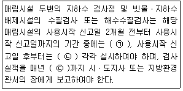
- ㉠ 월 1회 이상, ㉡ 분기 1회 이상, ㉢ 1월말
- ㉠ 월 1회 이상, ㉡ 반기 1회 이상, ㉢ 12월말
- ㉠ 월 2회 이상, ㉡ 분기 1회 이상, ㉢ 1월말
- ㉠ 월 3회 이상, ㉡ 반기 1회 이상, ㉢ 12월말
(정답률: 51%)
97. 폐기물관리법에 적용되지 않는 물질의 기준으로 틀린 것은?
- 하수도법에 따른 하수
- 용기에 들어 있지 아니한 기체상태의 물질
- 원자력법에 따른 방사성물질과 이로 인하여 오염된 물질
- 물환경보전법에 따를 오수ㆍ분뇨
(정답률: 49%)
98. 위해의료폐기물의 종류 중 시험ㆍ검사 등에 사용된 배양액, 배양용기, 보관균주, 폐시험관, 슬라이드, 커버글라스, 폐배지, 폐장갑이 해당되는 폐기물 분류는?
- 생물ㆍ화학폐기물
- 손상성폐기물
- 병리계폐기물
- 조직물류 폐기물
(정답률: 57%)
99. 생활폐기물배출자는 특별자치시, 특별자치도, 시ㆍ군ㆍ구의 조례로 정하는 바에 따라 스스로 처리할 수 없는 생활폐기물을 종류별 성질ㆍ상태별로 분리하여 보관하여야 한다. 이를 위반한 자에 대한 과태료 부과 기준은?
- 100만원 이하의 과태료
- 200만원 이하의 과태료
- 300만원 이하의 과태료
- 500만원 이하의 과태료
(정답률: 56%)
100. 폐기물처리시설의 종류에 따른 분류가 틀리게 짝지어진 것은?
- 용융시설(동력 7.5kW 이상인 시설로 한정한다.) - 기계적 처분시설 - 중간처분시설
- 사료화시설(건조에 의한 사료화시설은 제외) - 생물학적 처분시설 - 중간처분시설
- 관리형매립시설(침출수처리시설, 가스 소각ㆍ발전ㆍ연료화 시설 등 부대시설을 포함한다.) - 매립시설 - 최종처분시설
- 열분해시설(가스화시설을 포함한다.) - 소각시설 - 중간처분시설
(정답률: 43%)